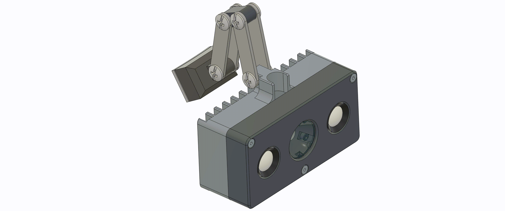
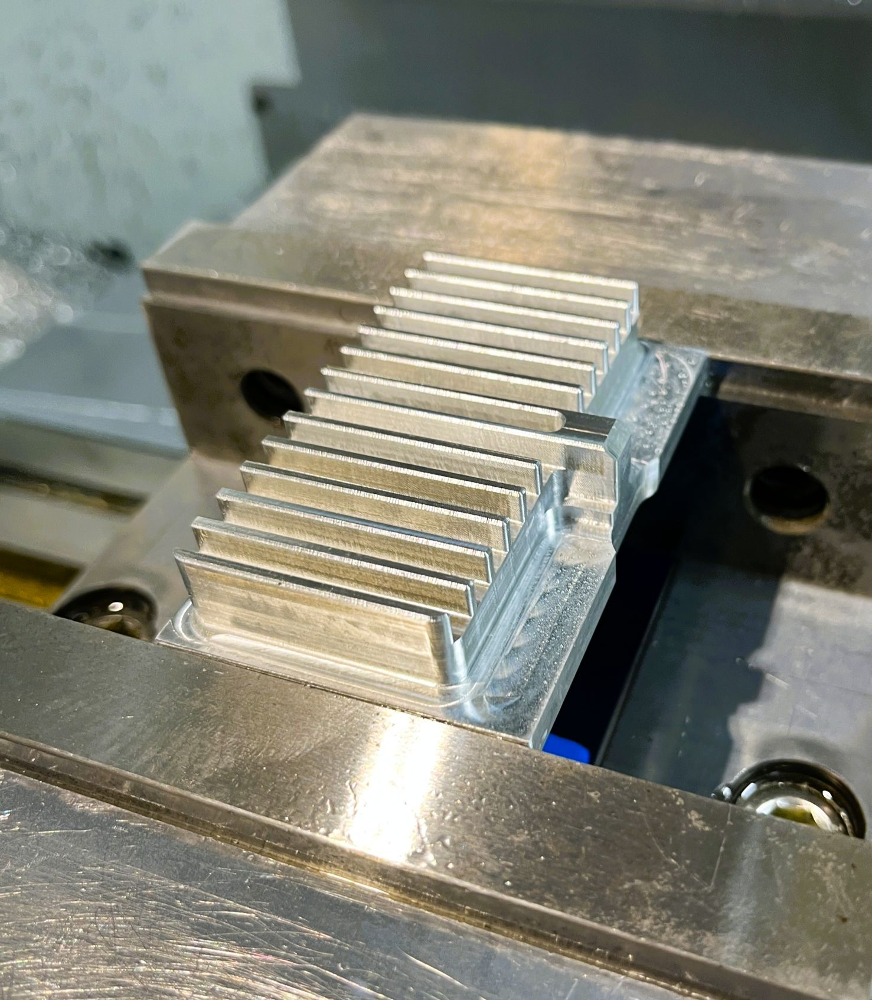
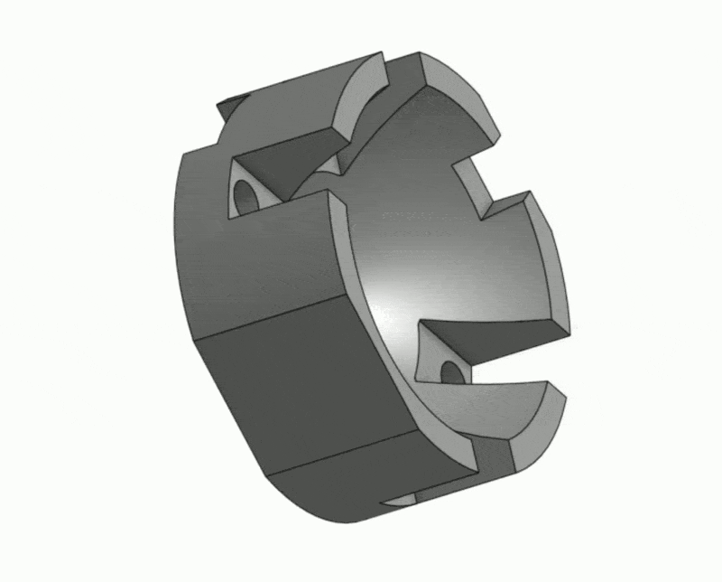
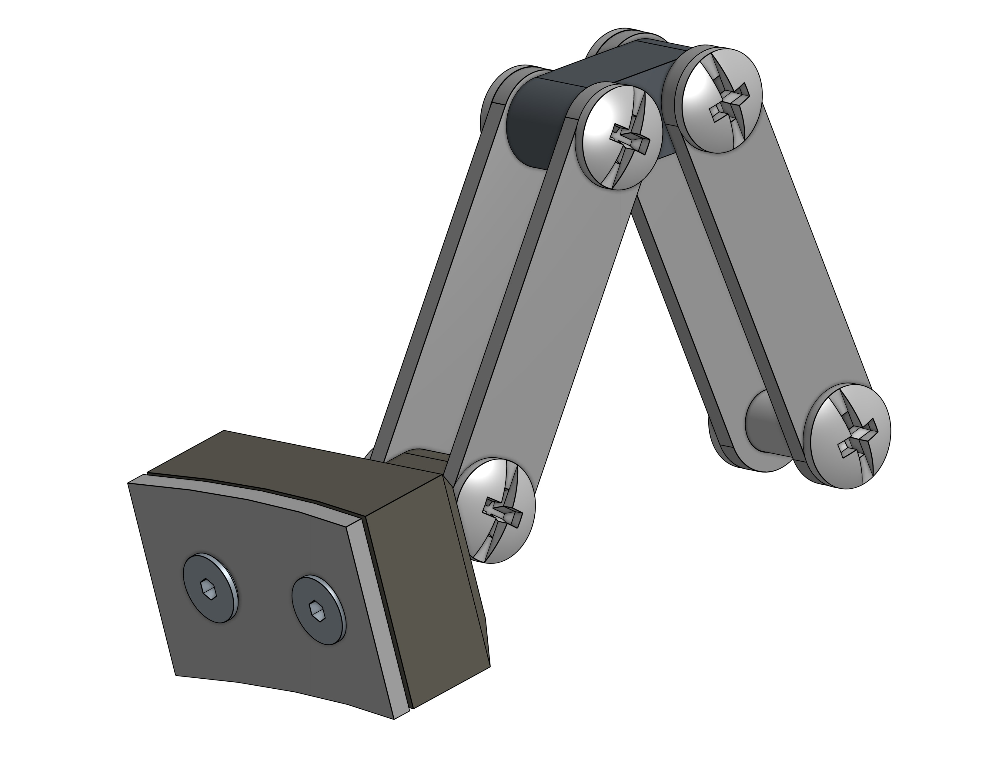
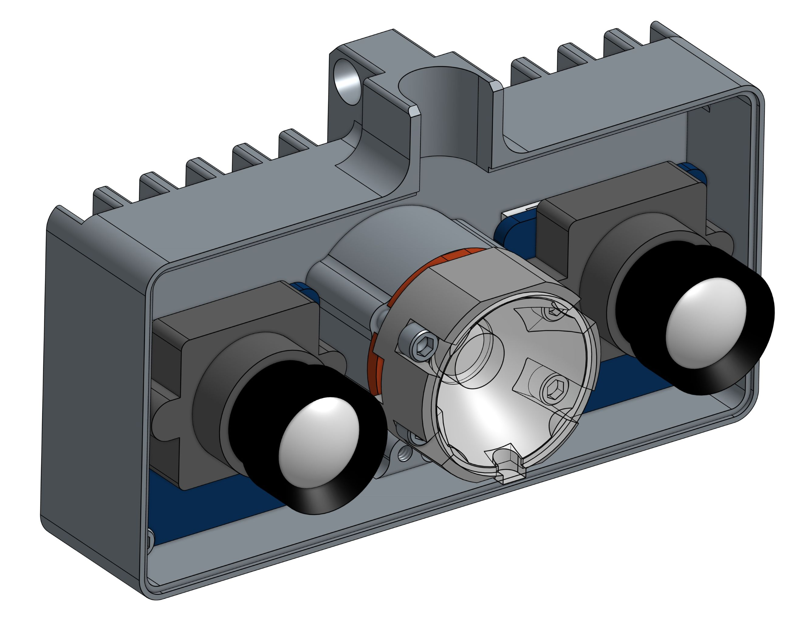
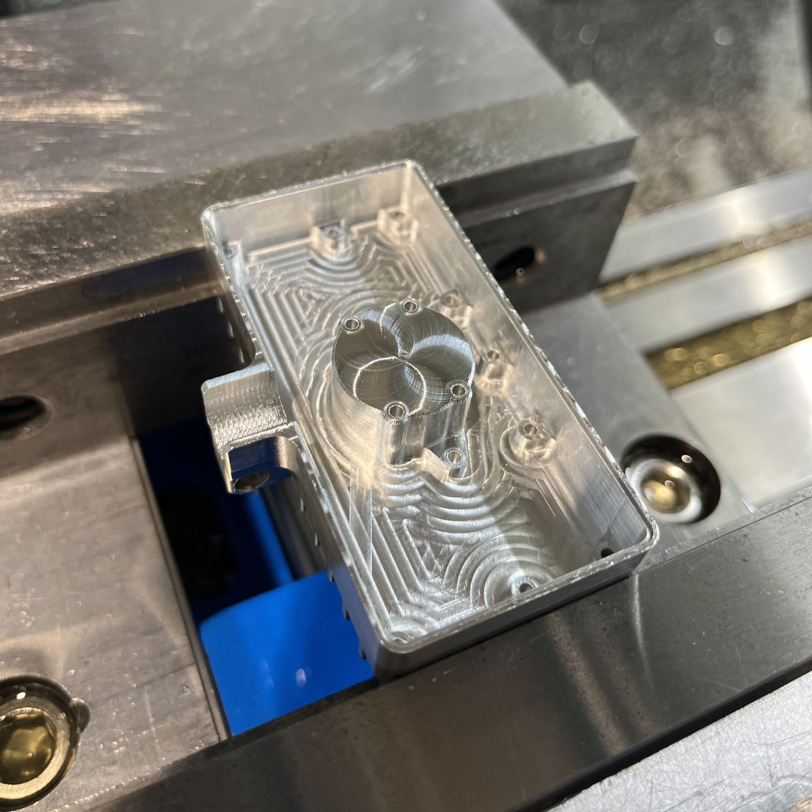
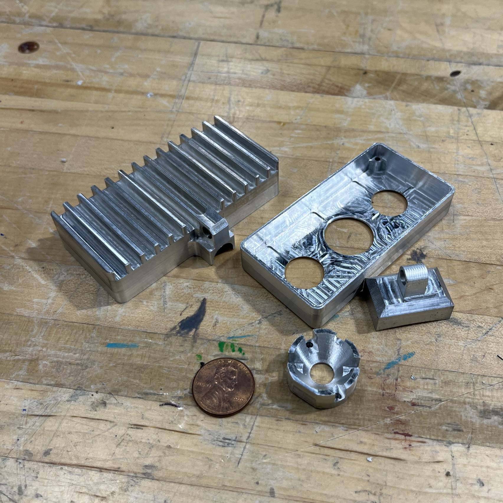
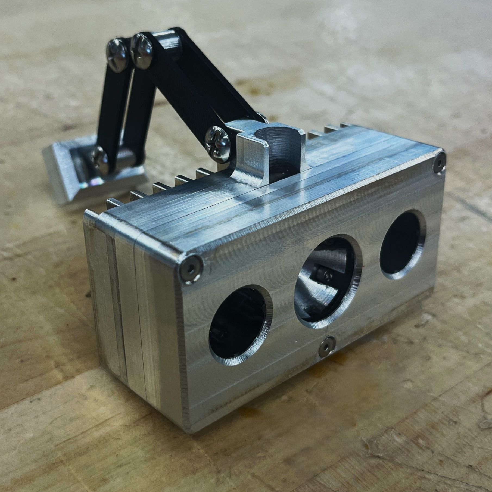

SURGICAL HEADGEAR
HEADLAMP WITH INTEGRATED STEREO CAMERAS FOR ML VISION TRAINING
Working as a design engineer with Duke DesignHub, I was approached by a Duke Hospital surgeon who needed a custom headlamp with integrated stereo cameras for machine learning vision training.
The objectives were simple: to make it as light and inobstructive as possible for use in long surgical procedures.
ALUMINUM HOUSING
Aluminum was chosen for the LED's heat dissipation requirements. The LED PCB is screwed directly into the housing and thermal paste is used for maximum heat transfer
The housing is designed as two separate pieces, fastened together with 3 countersunk screws for a flush fit and alignment. Nominal wall thickness is .050" to keep weight low.
Ribs are added to the front housing for buckling strength. Mounting points for the two cameras and the central LED are integrated on the back housing.
INTEGRATED COOLING FINS
The fins on the back housing were sized from heat transfer hand calculations, assuming natural convection and a target steady state temperature for the LED PCB. Manufacturing constraints were also taken into account: the gap between the fins must be greater than 1/8" (smallest available endmill)


REFLECTOR BLOCK
The LED PCB comes with an acrylic reflector lens. I designed an aluminum reflector block to fit around the lens and provide additional reflectivity. The parabolic contour of the lens took some prototyping for optimal fit. The reflector lens has a tab and registers against a slot on the reflector block.
Two cutouts on the bottom side provide clearance for solder joints on the LED PCB. Four screws fasten this block against the PCB and the back housing.
STAY-PUT ARTICULATED ARMS
The articulated arms are designed to stay in position once adjusted. The linkages are waterjetted from 1/16" aluminum plate. The joints are off-the-shelf binding barrels.
The backing block is contoured to fit an off-the-shelf plastic headband. Two countersunk screws and a backing plate attaches the block to the headband


INTERNALS
The 3 modules are packaged as close together as possible, mounted to back housing with #2 screws. The entire assembly is 3" x 1.75" x 1.125" and weighs less than 4 oz.
Some room above the modules allow for LED wiring and flex cables for the cameras. Wirings are run through the top.
MANUFACTURING
Toolpathing front housing internal
Toolpathing heat sink fins
Toolpathing reflector block
Setup for drilling linkage hole
This was my first time attempting to machine such small intricate parts on the CNC. Minimizing setup for for each part was one of my main goals. It was also a fun challenge to try and achieve good surface finish by honing in on finishing pass settings.
The thin wall and bottom caused some chatter, but I was able to clean it up with finishing passes. The fins came out surprisingly clean and the endmill still intact.


